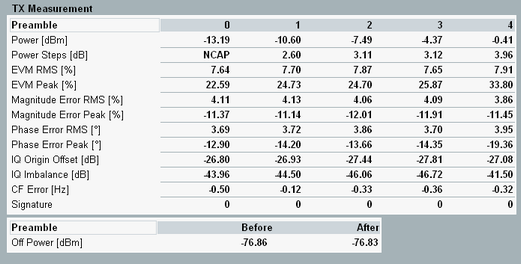

Detailed Views: TX Measurement
This view provides an overview of all results presented in the tables of the other detailed views.

WCDMA PRACH: Overview of table results
Available results:
- Power: Mean preamble power
- Power steps: Difference between the mean power of the preamble and the mean power of the previous preamble. For the first preamble, there is no previous preamble, so NCAP is always displayed.
- EVM, magnitude error, phase error
The RMS / peak values are calculated as the average / peak of the measured quantity of all samples in the preamble. The calculation excludes a 25 µs guard period at the beginning and end of the preamble. - I/Q origin offset, I/Q imbalance and carrier frequency error.
- Signature: detected preamble signature (0 to 15)
- Off power: Transmit OFF power measured before and after the last evaluated preamble, see also "Defining the Scope of the Measurement".
The OFF power is calculated as the average power within one slot before and after the preamble, excluding a 25 µs guard period next to the preamble. In the UE power vs. chip diagram, these ranges are labeled -2560 to -97 and 4192 to 6655.
See also: "TX Measurements"
For query of the results via remote control, see "Measurement Results".